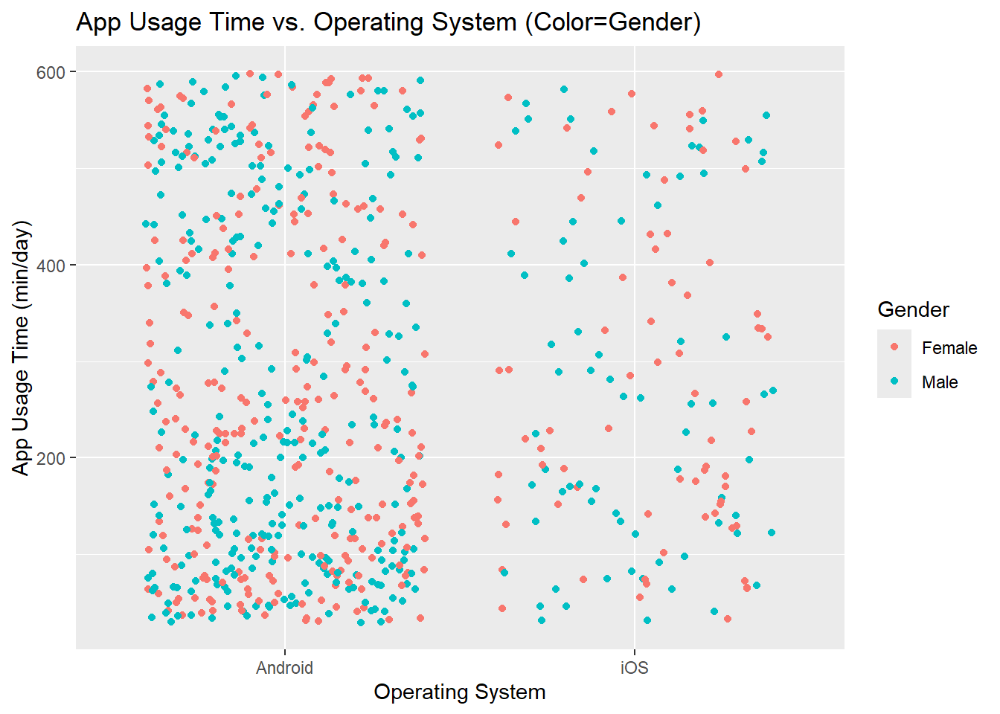
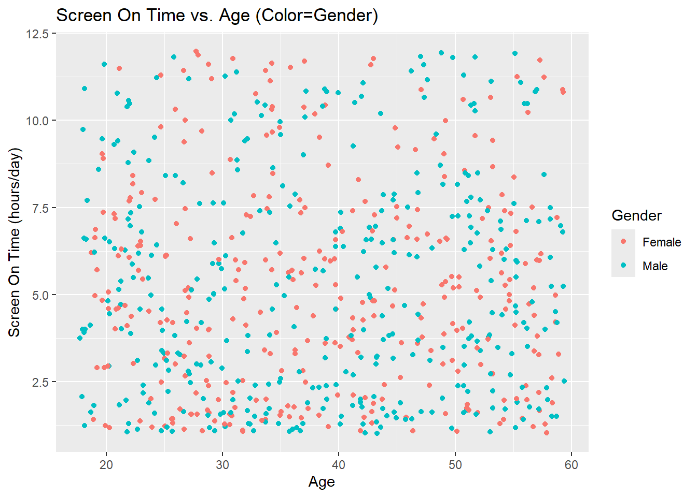
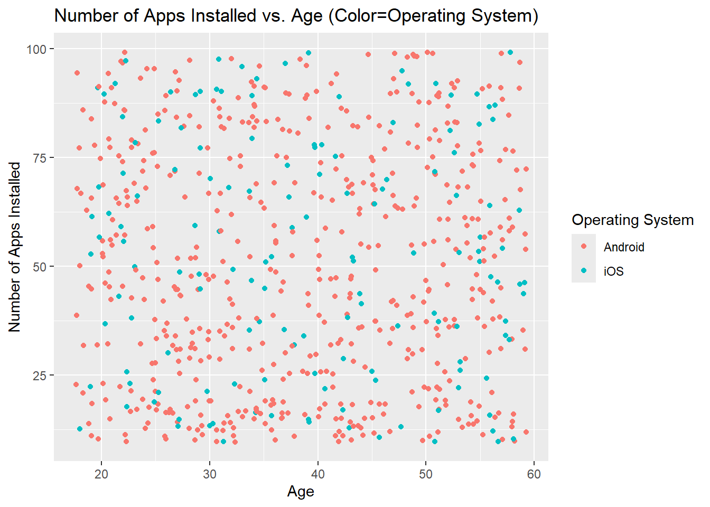
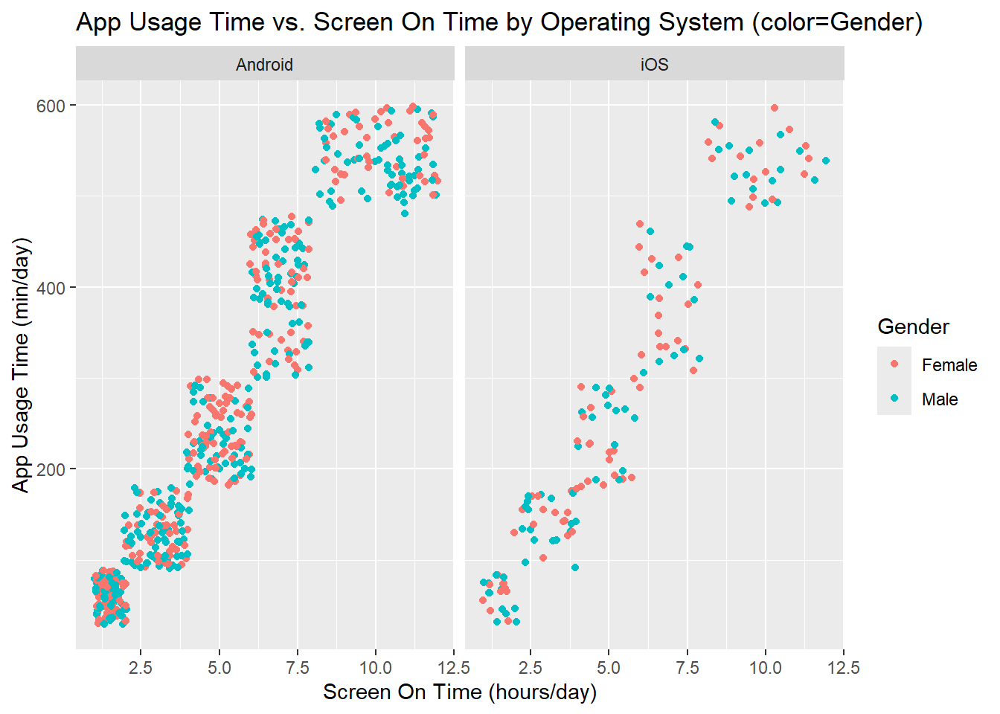

library(readr)
library(tidyverse)
library(ggstatsplot)Static Data Exploration
Data Exploration: numerical and graphical summaries
# read in the data
df <- read_csv("user_behavior_dataset.csv")Rows: 700 Columns: 11
── Column specification ────────────────────────────────────────────────────────
Delimiter: ","
chr (3): Device Model, Operating System, Gender
dbl (8): User ID, App Usage Time (min/day), Screen On Time (hours/day), Batt...
ℹ Use `spec()` to retrieve the full column specification for this data.
ℹ Specify the column types or set `show_col_types = FALSE` to quiet this message.head(df)# A tibble: 6 × 11
`User ID` `Device Model` `Operating System` `App Usage Time (min/day)`
<dbl> <chr> <chr> <dbl>
1 1 Google Pixel 5 Android 393
2 2 OnePlus 9 Android 268
3 3 Xiaomi Mi 11 Android 154
4 4 Google Pixel 5 Android 239
5 5 iPhone 12 iOS 187
6 6 Google Pixel 5 Android 99
# ℹ 7 more variables: `Screen On Time (hours/day)` <dbl>,
# `Battery Drain (mAh/day)` <dbl>, `Number of Apps Installed` <dbl>,
# `Data Usage (MB/day)` <dbl>, Age <dbl>, Gender <chr>,
# `User Behavior Class` <dbl>Contingency Tables
# 1-way
table(df$`Device Model`)
Google Pixel 5 iPhone 12 OnePlus 9 Samsung Galaxy S21
142 146 133 133
Xiaomi Mi 11
146 table(df$`Operating System`)
Android iOS
554 146 table(df$Gender)
Female Male
336 364 # 2-way
table(df$`Operating System`, df$Gender)
Female Male
Android 262 292
iOS 74 72table(df$`Device Model`, df$`Operating System`)
Android iOS
Google Pixel 5 142 0
iPhone 12 0 146
OnePlus 9 133 0
Samsung Galaxy S21 133 0
Xiaomi Mi 11 146 0Numerical Summaries
# function for finding measures of center and spread
find_center_and_spread <- function(df, group) {
return(df|>
group_by({{group}}) |>
summarize(across(where(is.numeric),
list("mean" = mean, "median" = median, "sd"=sd, "IQR"=IQR),
.names = "{.fn}_{.col}")))
}
# update column types so IDs and behavior class are not numeric
df <- df |>
mutate(`User ID`=as.character(`User ID`)) |>
mutate(`User Behavior Class`=as.factor(`User Behavior Class`))
# find centers and spread for all numeric vars, grouped by each categorical var
find_center_and_spread(df, `Device Model`)# A tibble: 5 × 25
`Device Model` `mean_App Usage Time (min/day)` median_App Usage Time (mi…¹
<chr> <dbl> <dbl>
1 Google Pixel 5 268. 232.
2 OnePlus 9 270. 216
3 Samsung Galaxy S21 266. 217
4 Xiaomi Mi 11 268. 217
5 iPhone 12 282. 258.
# ℹ abbreviated name: ¹`median_App Usage Time (min/day)`
# ℹ 22 more variables: `sd_App Usage Time (min/day)` <dbl>,
# `IQR_App Usage Time (min/day)` <dbl>,
# `mean_Screen On Time (hours/day)` <dbl>,
# `median_Screen On Time (hours/day)` <dbl>,
# `sd_Screen On Time (hours/day)` <dbl>,
# `IQR_Screen On Time (hours/day)` <dbl>, …find_center_and_spread(df, `Operating System`)# A tibble: 2 × 25
`Operating System` `mean_App Usage Time (min/day)` median_App Usage Time (mi…¹
<chr> <dbl> <dbl>
1 Android 268. 225
2 iOS 282. 258.
# ℹ abbreviated name: ¹`median_App Usage Time (min/day)`
# ℹ 22 more variables: `sd_App Usage Time (min/day)` <dbl>,
# `IQR_App Usage Time (min/day)` <dbl>,
# `mean_Screen On Time (hours/day)` <dbl>,
# `median_Screen On Time (hours/day)` <dbl>,
# `sd_Screen On Time (hours/day)` <dbl>,
# `IQR_Screen On Time (hours/day)` <dbl>, …find_center_and_spread(df, Gender)# A tibble: 2 × 25
Gender mean_App Usage Time (mi…¹ median_App Usage Tim…² sd_App Usage Time (m…³
<chr> <dbl> <dbl> <dbl>
1 Female 272. 230 174.
2 Male 270. 222 180.
# ℹ abbreviated names: ¹`mean_App Usage Time (min/day)`,
# ²`median_App Usage Time (min/day)`, ³`sd_App Usage Time (min/day)`
# ℹ 21 more variables: `IQR_App Usage Time (min/day)` <dbl>,
# `mean_Screen On Time (hours/day)` <dbl>,
# `median_Screen On Time (hours/day)` <dbl>,
# `sd_Screen On Time (hours/day)` <dbl>,
# `IQR_Screen On Time (hours/day)` <dbl>, …Plots
# kernel density plots
ggplot(df, aes(x = `App Usage Time (min/day)`)) + geom_density(alpha = 0.5, aes(fill = Gender)) + ggtitle("App Usage Time Distribution By Gender")ggplot(df, aes(x = `App Usage Time (min/day)`)) + geom_density(alpha = 0.5, aes(fill = `Operating System`)) + ggtitle("App Usage Time Distribution By Operating System")ggplot(df, aes(x = `Age`)) + geom_density(alpha = 0.5, aes(fill = `Operating System`)) + ggtitle("Age Distribution By Operating System")# Scatter plots
ggplot(df, aes(x = `Operating System`, y = `App Usage Time (min/day)`, color = Gender)) + geom_point(position = "jitter") + ggtitle("App Usage Time vs. Operating System (Color=Gender)")
ggplot(df, aes(x = `Age`, y = `Screen On Time (hours/day)`, color = Gender)) + geom_point(position = "jitter") + ggtitle("Screen On Time vs. Age (Color=Gender)")
ggplot(df, aes(x = `Age`, y = `Number of Apps Installed`, color = `Operating System`)) + geom_point(position = "jitter") + ggtitle("Number of Apps Installed vs. Age (Color=Operating System)")
# scatter plots with faceting
ggplot(df, aes(x = `Screen On Time (hours/day)`, y = `App Usage Time (min/day)`, color = Gender)) + geom_point(position = "jitter") +
ggtitle("App Usage Time vs. Screen On Time by Operating System (color=Gender)") +
facet_wrap(~ `Operating System`)
ggplot(df, aes(x = `Screen On Time (hours/day)`, y = `Battery Drain (mAh/day)`)) + geom_point(position = "jitter") +
ggtitle("Battery Drain vs. Screen On Time by Device Model") +
facet_wrap(~ `Device Model`)# boxplots
ggplot(df) + geom_boxplot(aes(x = `Operating System`, y = `Battery Drain (mAh/day)`, fill = `Operating System`)) + ggtitle("Battery Drain vs. Operating System")ggplot(df) + geom_boxplot(aes(x = `Device Model`, y = `Battery Drain (mAh/day)`, fill = `Device Model`)) + ggtitle("Battery Drain vs. Device Model")ggplot(df) + geom_boxplot(aes(x = `Device Model`, y = `Age`, fill = `Device Model`)) + ggtitle("Age vs. Device Model")# heat maps
ggplot(df, aes(x=`Screen On Time (hours/day)`, y=`Battery Drain (mAh/day)`)) + geom_bin_2d() + ggtitle("Battery Drain vs. Screen On Time")ggplot(df, aes(x=`Age`, y=`Screen On Time (hours/day)`)) + geom_bin_2d(binwidth=c(5, 2)) + ggtitle("Screen On Time vs. Age")# pie charts
ggpiestats(
data = df,
x = Gender,
y = `Device Model`,
package = "wesanderson",
palette = "Royal1",
title = "Gender of Users by Device Model",
legend.title = "Gender"
)ggpiestats(
data = df,
x = Gender,
y = `Operating System`,
package = "wesanderson",
palette = "Royal1",
title = "Gender of Users by Operating System",
legend.title = "Gender"
)